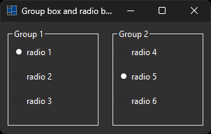

|
xtd
0.2.0
|
Loading...
Searching...
No Matches
group_box_and_radio_button.cpp
demonstrates the use of xtd::forms::group_box container and xtd::forms::radio_button control.
- Windows

- macOS

- Gnome


#include <xtd/xtd>
class form1 : public form {
public:
form1() {
text("Group box and radio button example");
client_size({300, 160});
layout_panel.control_layout_style(group_box1, {size_type::auto_size, true});
layout_panel.control_layout_style(group_box2, {size_type::auto_size, true});
layout_panel.dock(dock_style::fill);
layout_panel.padding(10);
layout_panel_group_box1.dock(dock_style::fill);
layout_panel_group_box1.padding(5);
layout_panel_group_box2.dock(dock_style::fill);
layout_panel_group_box2.padding(5);
radio_button1.checked(true);
radio_button5.checked(true);
}
private:
horizontal_layout_panel layout_panel = horizontal_layout_panel::create(*this);
group_box group_box1 = group_box::create(layout_panel, "Group 1");
vertical_layout_panel layout_panel_group_box1 = vertical_layout_panel::create(group_box1);
radio_button radio_button1 = radio_button::create(layout_panel_group_box1, "radio 1");
radio_button radio_button2 = radio_button::create(layout_panel_group_box1, "radio 2");
radio_button radio_button3 = radio_button::create(layout_panel_group_box1, "radio 3");
group_box group_box2 = group_box::create(layout_panel, "Group 2");
vertical_layout_panel layout_panel_group_box2 = vertical_layout_panel::create(group_box2);
radio_button radio_button4 = radio_button::create(layout_panel_group_box2, "radio 4");
radio_button radio_button5 = radio_button::create(layout_panel_group_box2, "radio 5");
radio_button radio_button6 = radio_button::create(layout_panel_group_box2, "radio 6");
};
auto main() -> int {
application::run(form1 {});
}
Generated on Sun Nov 2 2025 00:06:29 for xtd by Gammasoft. All rights reserved.